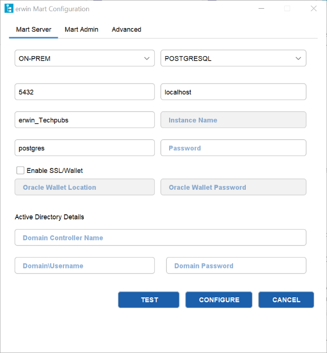

After Mart is initialized, the user who initialized must log in first. When you log in to Mart for the first time, configure it per the requirements of your organization.
Note: A password should fulfill the following criteria:
Apart from the above criteria, special characters are optional.
Also, if you enter an incorrect password five consecutive times, your account will be locked for five minutes (300 seconds) by default.
You can change the time for which the account stays locked as follows:
The erwin Mart Configuration dialog appears.

To log in, from the Windows Start menu, click erwin > erwin Mart Administrator
To log in as a Windows-authenticated user, follow these steps:
This procedure describes how to enable a Windows-authenticated user log in to a Mart that is already initialized. Use this procedure if the Mart is initialized with either a server user or a Windows-authenticated user.
Now the Windows-authenticated user can log in to erwin Mart Administrator by providing the user name in the <domain name>/<user name> format.
Note: A local Windows user who does not belong to a domain or who is not part of an Active Directory cannot log in to the Mart as a Windows user.